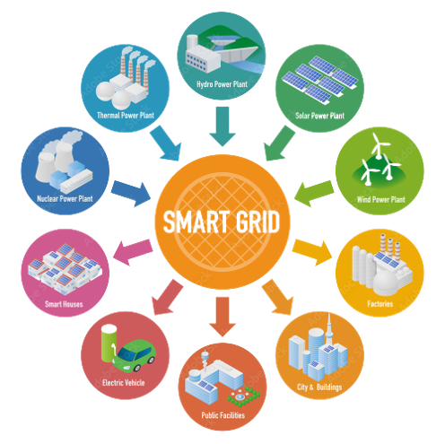
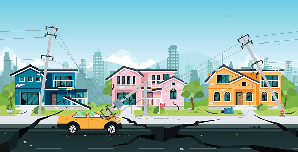

Using the extracted real-time data from Instagram user accounts,
predict the personalities of social media users by using their
Instagram captions and categorizing their personalities based on
the MBTI test through the application of machine learning
algorithm, logistic regression.
The top group of players were identified using various clustering algorithms such as AGNES,
DBSCAN, mini batch K-means, and Birch using the history of players
played in the last 12 years of IPL matches. Team-wise and player-wise
analysis was performed, and the results were visualized.

An efficient power management strategy is designed to effectively manage the
electricity production from renewable energy resources connected to a micro-grid,
thereby satisfying consumer demand. Minimized the operating costs
using Bio Inspired Algorithms.
A Chatbot is developed to answer queries from VIT freshmen
students.Keras sequential neural network model is used to build
the chatbot. To retrieve the information, the chatbot is connected
to a JSON database and Google Maps for directions

Natural disasters like earthquakes have the potential to seriously affect both human life and property.
By considering the parameters that affect radon concentration in soil, various machine learning algorithms
are used to predict the anamolous behavior of radon in soil,before and after the occurrence of seismic events.